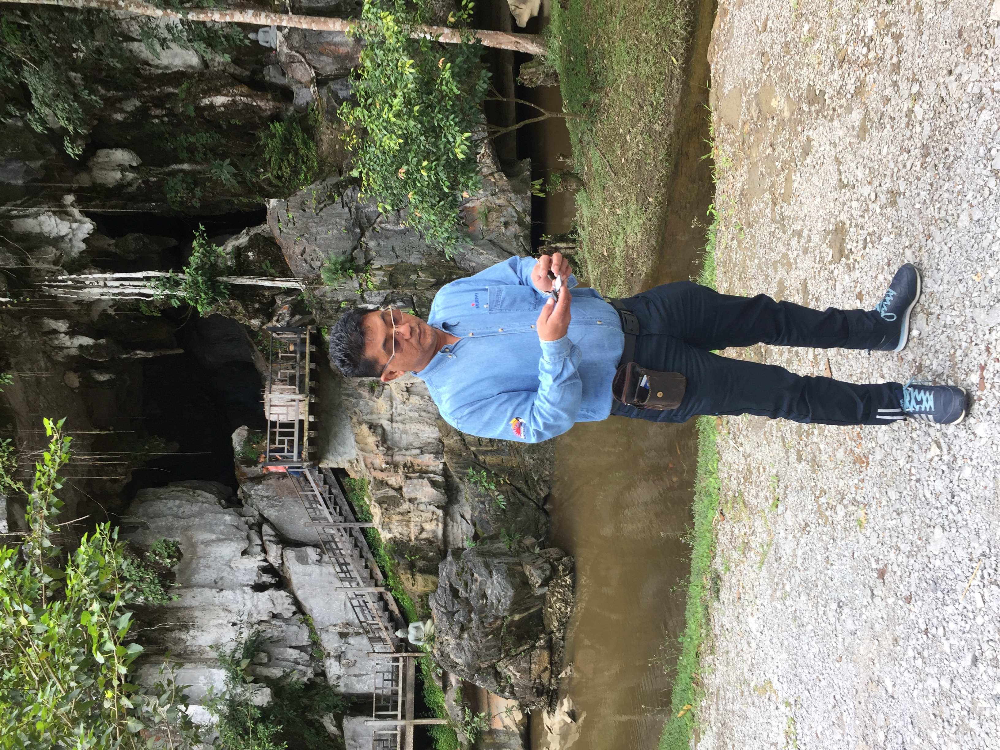
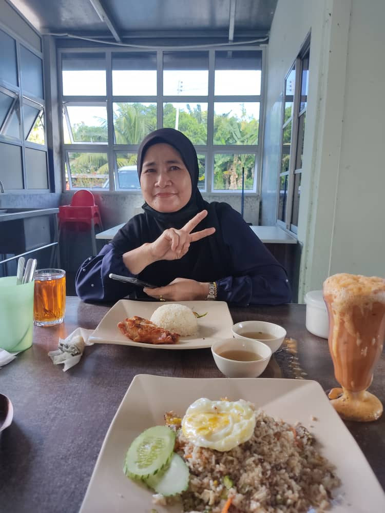
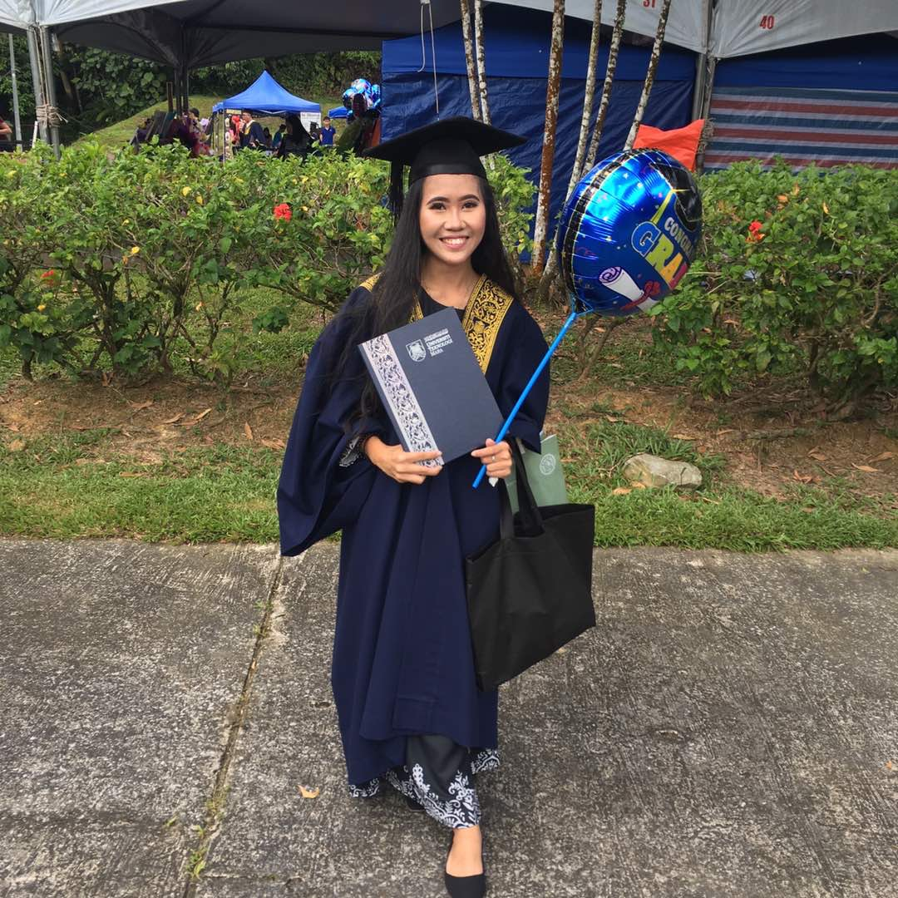
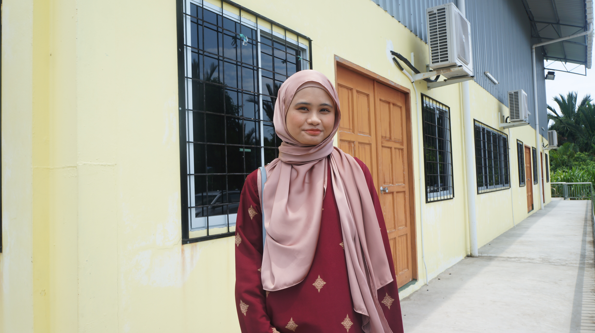
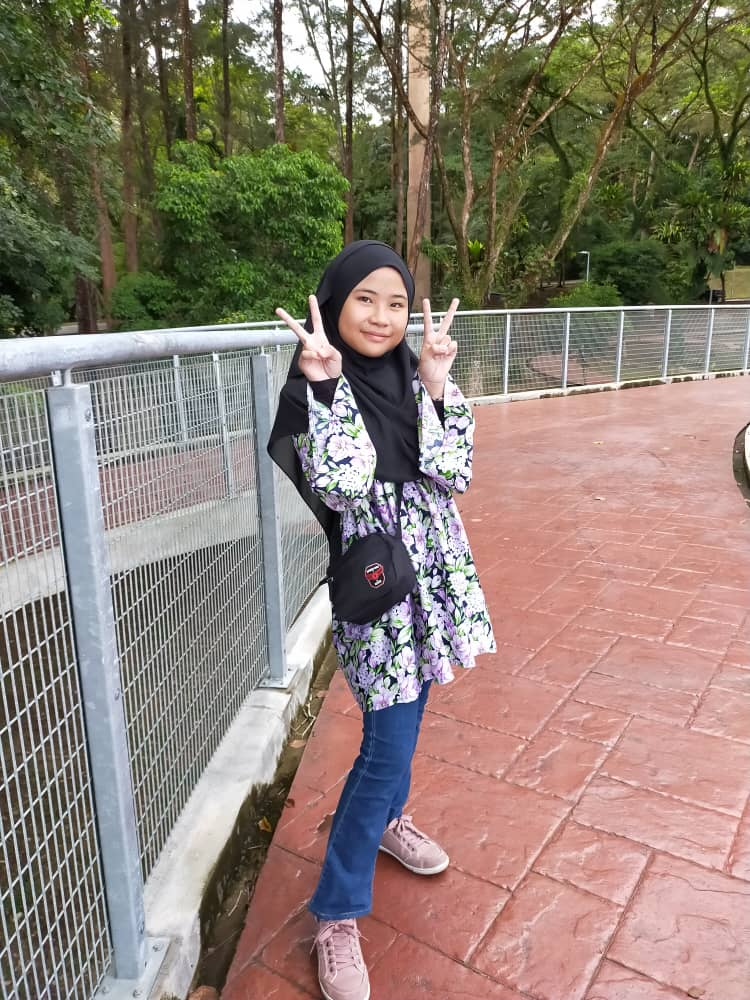

Home |
Previous |
| This Is My Family |

|
| This is my family.My family consists of six members which are my parents,two older sister and one younger sister. |
|  |
| This is the most handsome king I know in this world.He is my father.His name is Ismail Bin Mahari or well known as Mael Glamour.My dad is 55 years old this year.My dad was born in 7 February 1966 and the sixth brother of 10 siblings.He works as a Technician in PTTEP Oil and Gas Company in Bintulu.Before this he work at Murphy Oil and Gas in Bintulu also as technician.As he works at Bintulu,we have always being far away from him since we lived in Miri.My dad come home when he got his working leave .Although he did not there with us growing up from a little child to a girl and now a women,he has always called us and bring us to everywhere we wanted to.He also provided us with everything that we need.My father once told us when he decided to work far away from home."Your mother is stronger than you thought,even though she knows that she need to survive without her husband by her side,she is stronger than we thought".As we grow up now,if all of us siblings got free time,we will visit our dad in Bintulu and live there for couples of nights.Even though we all are far from each other,our family bond is still strong and will get stronger.What a great dad that I have |
|  |
| Beautiful Queen.I have a magic mirror and I have asked "who is the prettiest women in this world",the mirror will answer "its your mother".This is my mother.Her name is Merjanah Binti Mohamad or known as JanahMael.My Mom is 52 years old this year.My mother was born in 5 march 1969 and have six siblings including herself.She is the fifth daughter.My mother was a tailor before and she is the one who always sew up our siblings baju kurung for Eid and schools.As she is getting older,she stop as a tailor at age 45 and started her own business after that.Now she has her catering business and food based business.She manage to have income for almost RM2000 for a month.Recently,she sold almost all stock of her belacan and cencaluk business for almost RM600.Here is why we know understand why my father told us that our mother are stronger than we thought.Even though my dad sometimes forget to gives us allowance for our monthly expenses,my mother had her backup money from her business to support us monthly.What a wonderful women she is. |
|  |
| You never know unless you walk in my shoes,You never know how this tangled string is,cause every body sees what they want to see,it is easier to judge me than to believe me.This is the words that I would say to describe my oldest sister.Her name is Azyanrahimi Binti Ismail.She`s well known for her nickname Amyyer or AmyChae.Even though I am her younger sister I called her as Amy at home and public .I have been never called me sis or "kakak". Amyyer is 26 years old this year and she was born in year 1995 ,on 30th April.She was born in at Hospital Mukah because our parents only moved to Miri in 1995 after my sister was born.Amy was also studying in SK Sayed Othman and SMK St Columba.Her UPSR is 4A1B,while her PMR is 6A and 2B last but not least her SPM was 4A3B1C.My sister graduated from Universiti Teknologi Malaysia,Kota Samarahan with Diploma In Tourism Management and Bachelor Degree in Finance.Earlier 2020,she works as a bank employee in Amanah Saham Nasional Berhad for couple of weeks.After that ,she started her own business with business capital RM200.She start off with affiliate program of Neelofa X Mamasab by becoming the collaboration dropship.After that,she join the Unicorm Team Of Faith Fleur to increase her income.As her small business becoming more stable,she join the BeauBoss Team who sold Beautyra products such as blusher,lipstick,hair to toe mist .For faith fleur ,she sold hair products such as shampoo,conditioner,hair serum,hair mist and hair tonic.She`s doing all sort of business to have her own income to support herself . She is actually still looking for job but after 2 years,she`s still haven`t found a job yet.Even though she`s not working ,but since she has her own business and still trying harder to get income for herself, I am really proud of her because she has the courage to step out from her zone and get stronger day by day.This day,the competition of small businesses is quiet intense since everyone is affected as the result of covid-19.Here I am still supporting her back even though I am far away from her.I bought her beautyra products too.One thing that I feared my sister is that she is an independant women.I am afraid that she might end up being single cause having a partner or a relationship was never even appeared in her life or even her mind.Her priority is on herself and her happiness along with her family. |
|  |
| My older sister once said this to me "Why should we take care of other people hearts even when ourself are hurt inside.".Her name is Izyannarina Binti Ismail and she is 23 years old.As for Izyann,we called her Nina but her friends called her Izyann.I can say that I am closer with Nina than Amy maybe it is because our age range are closer than Amy and I.Nina was born at Klinik Kesihatan Balingian in 26 March 1998.As Amy was studying at SK Sayed Othman and SMK St Columba,Izyan also finish her primary and high shool there.She manage to get 5A`s for UPSR ,8A`s for PMR and 5A3B1C for SPM.She continued her study at Matriculation College in Labuan for 1 year as she finished her SPM.She manage to enter Universiti Malaysia Sarawak(UNIMAS) from Matriculation College by having pointer 3.79.In Unimas,Nina is taking Bachelor Degree in Computer Science(Multimedia Computing) with Honours.In 2021 March,she is already in the last year and last semester which was the 8th semester.As she are also student like me,she was affected by covid-19 and being stranded in residential college for two months in Kuching.That time was her 6th semester and her industrial training semester.Fate is in her favour when the government decided to bringing home stranded studetnts.She manage to celebrate the fasting month and eid with family in Miri.As she is in Miri,she is my oldest sister regular customer.Nina bought almost all beautyra products collection from lipstick to blusher to hair to toe mist.She is also the reason why my oldest siser never give up to become a sucessful businesswomen.Nina has passion in fashion and beauty products.She is kind like Amy but the better version since Amy is a little bit simple but charisma person.Nina is more like a well dressed queen but in the same has the sense of humor in her.She loves doing random jokes with us 3 siblings but she never laugh to her own jokes.Nina actually dreamt to became a Dermatologist but Allah knows what better for her.Now that she will finish her study,she is still deciding together with my oldest sister whether both of them will pursue their Master together of not.Nina and Amy was closer since both of them has closer age range.Both of them has a similar childhood experience so that is why both of them are closer.Nina is a quiet but matured person.She think before she act.I did not feared Nina as much as Amy but when talking about logic and science,Nina is knowledgeable. |
|  |
| My life is a pink.Her name is Rindiyanie Binti Ismail.She `s the youngest in our family.She loves pink.The age range of my sister and I are 7 years apart.I still remember being called as the youngest of siblings before she was born.Yaniee was born in 20 June 2008 at Hospital Besar Miri.Since Amy was the one who took care of her since she was a baby until she became a girl,Yanie is closer with Amy than with me,even though I am older 7 years than her.As her older sisters before,Yanie also finished her primary school st SK Sayed Othman and her final exam result is 3A3B.Now she have been started her first year in SMK St Columba Miri.We can see that in my siblings I am the only one who are active in co-curiculum while my other siblings are active in academic.In primary 3 primary 4 and primary 5,Rindiyanie was a librarian for straight 3 years.She loves to read and she loves to eat.Primary 6 ,the teachers assign her as the School Head Prefect since she has shown a very good attitude and a very excellent exam result.She manage to get the highest score subject award in straight fro Primary 1 till Primary 6 with the average mark of 85%.Since she is the youngest in family,she is a little bit annoying and talkative but us siblings never care about that since she will be the only one who helps to wake us up in the car cause us three olders sisters loves to sleep in the car.Other than pink,Yanie loves to draw and colouring.As for this moments she began to show interest in images and video editing.She loves to try all sorts of activities that she want excluding outdoor activities cause she hates being in a hot place since she easily gets tired and sweaty.As Yanie is closer with Amy,both of them dislike unhealthy food unlike me and Nina.Both Nina and I loves to eat junk food and fast food while other two are opposite.Yanie is the one who always laugh at Nina random jokes even when others does`nt laughing.Despite being a happy go lucky person,my sister also went through puberty and became more sensitive this days.Unlike before we used to shut each other out since we both are not close and are always having quarrel with each other.As for now,us siblings getting better and will get the best bond of siblings in future. |